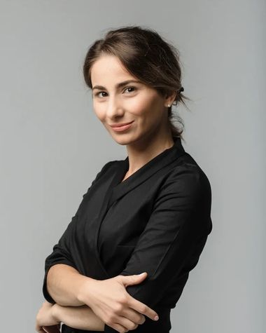

განათლება და გამოცდილება

გავიზარდე და ექიმის პროფესია პეტერბურგში დავეუფლე: მეჩნიკოვის სახელობის სამედიცინო უნივერსიტეტი, შემდეგ ინტერნატურა თერაპიაში პავლოვის სახელობის სამედიცინო უნივერსიტეტში. გასტროენტეროლოგად ვმუშაობდი ქალაქის სამ კლინიკაში.
2022 წელს ისტორიულ სამშობლოში დავბრუნდი. მივიღე საექიმო ლიცენზია და ახლა პაციენტებს ვიღებ თბილისსა და ბათუმში, ონლაინ კონსულტაციებს კი ვატარებ მთელი მსოფლიოსთვის — ქართულ, რუსულ და ინგლისურ ენებზე.
მჯერა, რომ ექიმის ამოცანაა აგიხსნათ და არა დაგაშინოთ. ამიტომ ვწერ ბლოგს, ლექციებს ვუკითხავ ექიმებს და საჭმლის მონელებაზე ისე ვსაუბრობ, რომ მიღების შემდეგ სიმშვიდე დაგრჩეთ და არა შიში.
- განათლება
- ი. ი. მეჩნიკოვის სახელობის ჩრდილო-დასავლეთის სახელმწიფო სამედიცინო უნივერსიტეტი, სამკურნალო საქმე; ინტერნატურა თერაპიაში — აკად. ი. პ. პავლოვის სახელობის პეტერბურგის სახელმწიფო სამედიცინო უნივერსიტეტი; სპეციალიზაცია გასტროენტეროლოგიაში
- გამოცდილება
- 14+ წლიანი პრაქტიკა: პეტერბურგის კლინიკები, 2022 წლიდან — ლიცენზია და მიღება საქართველოში
- სწავლება
- სამედიცინო განათლების აკადემიის ლექტორი — სემინარები ექიმებისთვის კუჭ-ნაწლავის ფუნქციურ დაავადებებზე (უწყვეტი სამედიცინო განათლება)
გეხმარებით, რომ იყოთ ჯანმრთელები და ლამაზები — სტრესისა და დიეტების გარეშე.
ბლოგისა და პრაქტიკის დევიზი